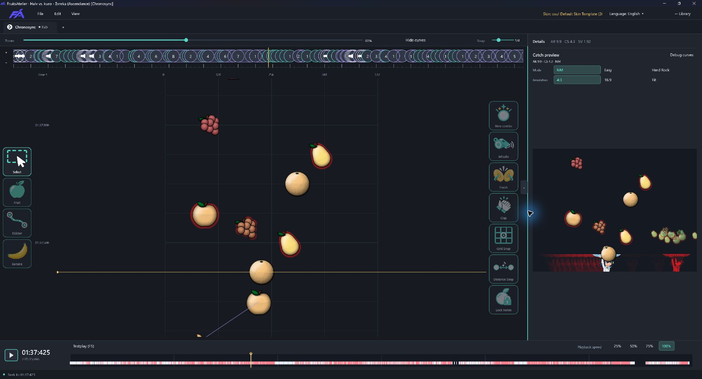
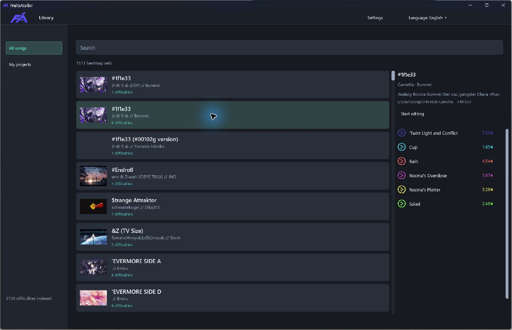
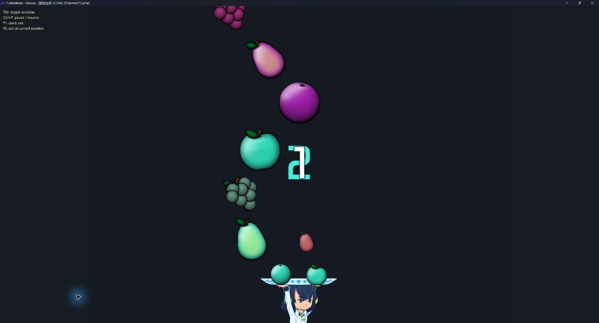

Keep the shape editable.
Convert imported sliders to FSliders. Adjust points, add reverses, and switch between control-point and pen modes.
An atelier for osu!catch.
Find a track. Shape a pattern. Play it back.
A dedicated editor for your next Catch beatmap.

01 / YOUR BEATMAP LIBRARY
Browse your osu!stable library, search by song or mapper, and pick a difficulty. Your saved work is one click away in My projects.

03 / BUILT-IN TESTPLAY
Press F5 and play from the current position. Feel the movement, hear the hitsounds, then return to your edit.
Try it yourself or toggle autoplay. Check a tricky passage at reduced speed, with your skin and preview mod.

STAY WITH THE MUSIC
Music and hitsounds at 25%, 50%, 75%, or full speed. Preview patterns with NM, Easy, or Hard Rock.
MAKE ROOM FOR IDEAS
Switch between difficulties in tabs. Move, duplicate and flip groups of objects, with undo and redo.
BRING IT BACK TO OSU!
Keep editable projects in your workspace. Export an .osu file or a new difficulty to osu!stable.
FRUITSATELIER Latest release
Download the editor, open a track, and make it yours.
Help shape FruitsAtelier. Join our Discord to test the alpha, share feedback, and report bugs.
Read the release notesWindows 10/11 · DirectX 11
Extract the ZIP and run FruitsAtelier.exe.
The runtime and English manual are included.